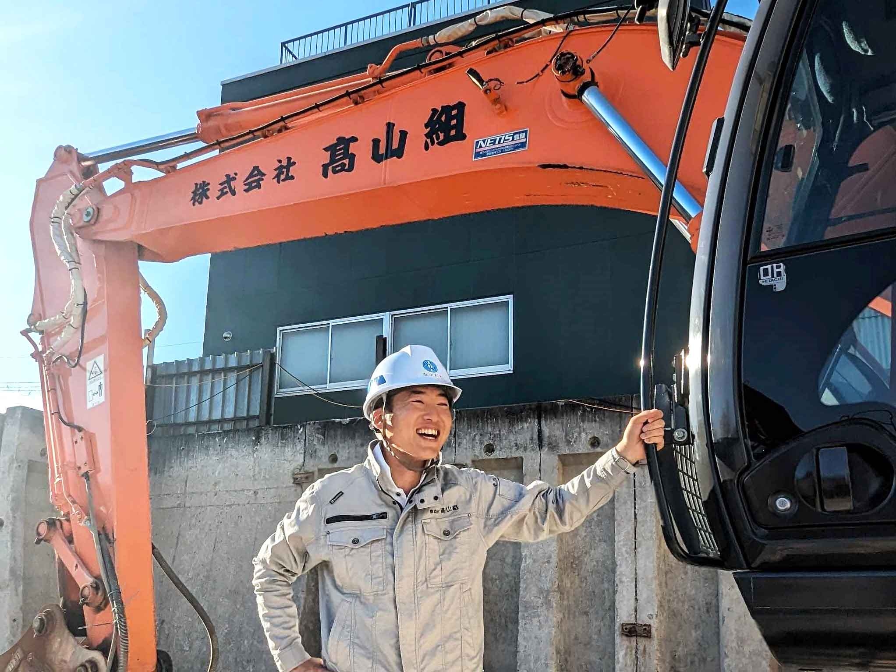

R
ECY
C
LE
リサイクル業
髙山組のリサイクル業とは？
リサイクル業は、街や社会の発展と共に需要が高まる産業です。何かを新しく「創る」ことは、同時に「処分」が必要なものが発生してしまうということでもあります。これからの自然環境を守っていくには、廃棄物の量を減らし、可能なものは再利用していくことが重要となります。
弊社のリサイクルプラントは、廃棄物であるコンクリート・アスファルトガラを高品質なＲＣ（再生砕石）に加工し、再利用を可能にします。

RC（再生砕石）ができるまで

混合物を分別
運搬されてきたコンクリート・アスファルトに混ざった金属等を取り除き分別します。
人が持てるサイズに
分別したコンクリート・アスファルトを粉砕機に入るようパクラーを使い人が持てる程度の大きさにします。
破砕機に投入
弊社のリサイクルプラントの破砕機に#02のガラを投入します。
様々な大きさに
破砕機で、砂利サイズになったものをふるいにかけ、大きさを揃えます。
RC(再生砕石)販売
各サイズに選別し、用途に合わせてRCを販売します。
リサイクルプラントのご利用方法
髙山組のリサイクルプラント営業

sales representative
中川 健太郎
さん
AGE
32
EXPERIENCE
リサイクルプラント営業歴
3
年
人の役に立ちたい！
憧れの建設作業員に！
吾輩は猫である。名前はまだ無い。どこで生れたかとんと見当がつかぬ。何でも薄暗いじめじめした所でニャーニャー泣いていた事だけは記憶している。吾輩はここで始めて人間というものを見た。しかもあとで聞くとそれは書生という人間中で一番獰悪な種族であったそうだ。この書生というのは時々我々を捕えて煮て食うという話である。しかしその当時は何という考もなかったから別段恐しいとも思わなかった。ただ彼の掌に載せられてス